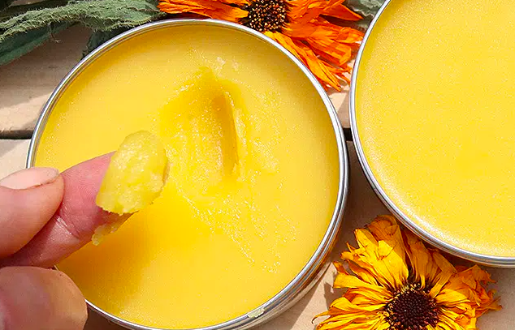

Herbal Healing Salve

Description
This salve includes sweet almond oil for its lightness and skin conditioning properties. It
also contains beeswax to firm it up and leave a protective layer on your skin. Together with the
herbal extracts, the finished product soothes, heals, relieves pain and itching, and
basically acts as an all-purpose skin salve.
All of this is possible due to the following herbs and their healing properties:
- Calendula is an edible flower that cleanses the skin, reduces pain and inflammation,
and speeds up healing.
- Plantain, the weed with superpowers, reduces swelling and redness,
soothes rashes, reduces itching, and eases reactions to bites and stings.
- Comfreyis a powerful wound healer thanks to its allantoin, saponins,
and polysaccharides. It's great for treating bruises, sprains, pulled muscles, and other muscular
tissue damange.
Note: While comfrey has been found safe to use on the skin, studies have shown
that when ingested at high doses and/or for long periods, it can cause liver damage. For that
reason, please do not ingest comfrey or this salve.
Equipment
- Digital scale
- Double boiler
- Rubber spatula
- Clean, dry, and sterilized containers (tins or glass jars)
Ingredients
- 75 g Calendula-infused sweet almond oil
- 75 g Plantain-infused sweet almond oil
- 75 g Comfrey-infused sweet almond oil
- 28 g Beeswax
- 1/2 tsp Rose Geranium essential oil (optional)
Steps
Make the Infused Oils
- Begin making the three infused oils for this receipe at least four weeks before making the salve.
Make sure the herbs are fully dried out. Any moisture can impact the shelf-life. You will need enough
calendula flowers, plantain leaves, and comfrey leaves to fill a pint jar two-thirds full.
-
Once your herbs are in the jars, pour sweet almond oil all over them and to within a quarter-inch of the top.
Seal the jars, shake them, and place them in a warm place out of direct sunlight.
-
Give the jars a shake daily. After three to six weeks, strain the oil from the plant material
using a cheesecloth. Discard the plant materials and pour the oils into new, sterilized jars.
The infused oil has a shelf-life of one year. Store in a dim place at room temperature.
Make the Herbal Healing Salve
- Fill the larger of your pots with water and bring to boil.
- Measure the beeswax in the smaller pot and float it inside the pot of boiling water.
This evenly distributes the heat and is important since beeswax should never be melted
over direct heat.
- When the beeswax is melted, pour in the herb-infused oils. Stir with the spatula until the oils are just melted.
Take the pot off the hot water and set it on a cloth or potholder.
- Stir in essential oil and pour into tins or containers and allow to cool to room temperature. Cooling can take four hours.
During this time, don't cover the containers as it can cause condensation on the lid. Place lids on once completely cooled.
You can use this salve immediately once cooled. The shelf life correlates to the oldest ingredients you used.